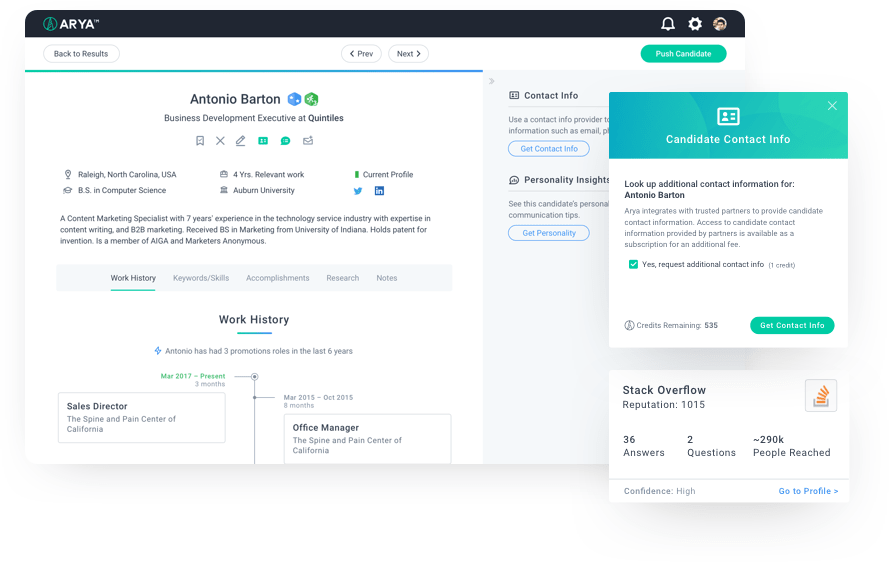
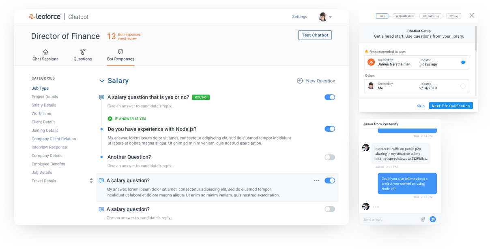

Arya: A.I. Recruiting
Reduce sourcing from hours to minutes
Arya is a market-leading A.I. recruiting tool that turns average performers into star recruiters by automatically populating their pipeline with the right talent for each job. Through artificial intelligence, Arya learns from recruiters’ behavior, predicts candidates’ success and cultural fit, and provides unprecedented candidate and job intelligence to hire quality talent faster.
My Role
I researched and designed for the Arya app by asking the right questions and making sure we have all the information needed to build the right product for our audience. I was tasked to improve upon the overall design and launch new features within quick timelines. I brought numerous improvements to light, teaming up with our product manager and client success to use analytics and empathy to drive Arya forward.
Redesign with a design system
If I was to improve overall UX and design of Arya, I needed a method in place for the engineering team and I to keep visuals and functionality in sync. So I created a design system to drive consistency in Arya and eventually to all our products, resulting in a greater user experience. It put the focus on solving the problem at hand, rather than worrying about styling, and re-inventing the wheel every time. And with the launch of new products, this design system has been critical in creating faster consistent designs and prototypes.

Another high value initiative was to get a better understanding of our users, their challenges and their goals. In collaboration with client success, we worked through personas and user journey maps. This has helped us narrow our client base to four key segments and helped Arya become one step closer to being more relevant to our users and their needs.

Job Intel
Arya’s artificial intelligence is able to analyze jobs and candidates faster and more completely than a human. And for Arya to make these decisions, it analyzes industries, companies, keyword sets, and job functions. There is a lot of data it must convey to our users and my goal here was to help make this complicated data be more accessible and actionable.

One profile to rule them all
How can we improve a candidate’s profile view where we were only showing job titles and dates in the experience section? We needed to show more valuable info through social profiles and furthermore, the recruiter also had to click the source link to view the information. We wanted to change this by creating a master candidate profile where the recruiter could get the complete representation of a candidate’s social footprint. If the candidate has a Github or Stack Overflow account then we will show an overview card of each account in their master profile to help recruiters zero in on the right fit candidate.
The mobile app
The challenge here is that if we tried to create an app that does something for everyone, we risk helping no one, So we had to keep the mobile app lean. We needed more insight on recruiters to help us identify the context of when and where a recruiter would use mobile Arya. This lead us to discover that a recruiters prefered to review their candidate pipeline when out on business. So we created a tinder-like experience where the primary goal is to view incoming candidates and quickly decide if he/she should be shortlisted, rejected, or skipped.

Innovation never stops
Pre-screening is an important part of the recruiter work week. Playing phone tag and emailing back and forth with candidates during the pre-screening process is a time-consuming process. So, the next problem to solve is for a virtual assistant that engages and pre-screens interested candidates prior to the first interaction with a recruiter. The goal here is to free up time and move candidates in and out of the pipeline more quickly and efficiently throughout the hiring process.